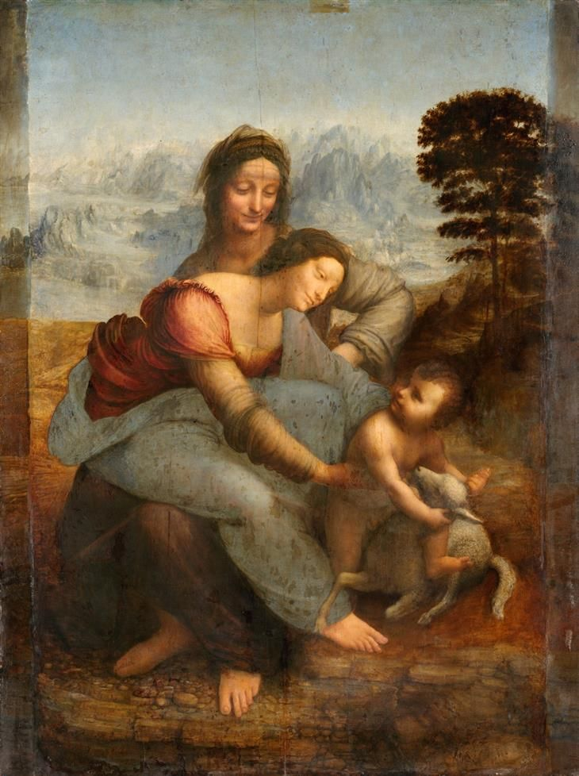

Leonardo da Vinci (Leonardo di ser Piero da Vinci) Vinci, 15 de abril de 14522-Amboise, 2 de mayo de 1519) fue un polímata florentino del Renacimiento italiano. Fue a la vez pintor, anatomista, arquitecto, paleontólogo, artista, botánico, científico, escritor, escultor, filósofo, ingeniero, inventor, músico, poeta y urbanista. Murió acompañado de Francesco Melzi a quien legó sus proyectos, diseños y pinturas. Tras pasar su infancia en su ciudad natal, Leonardo estudió con el pintor florentino Andrea de Verrocchio. Sus primeros trabajos de importancia fueron creados en Milán al servicio del duque Ludovico Sforza. Trabajó a continuación en Roma, Bolonia y Venecia, y pasó sus últimos años en Francia, por invitación del rey Francisco I.

Frecuentemente descrito como un arquetipo y símbolo del hombre del Renacimiento, genio universal, además de filósofo humanista cuya curiosidad infinita solo puede ser equiparable a su capacidad inventiva, Leonardo da Vinci es considerado uno de los más grandes pintores de todos los tiempos y, probablemente, la persona con el mayor número de talentos en múltiples disciplinas que jamás ha existido. Como ingeniero e inventor, Leonardo desarrolló ideas muy adelantadas a su tiempo, tales como el helicóptero, el carro de combate, el submarino y el automóvil. Muy pocos de sus proyectos llegaron a construirse (entre ellos la máquina para medir el límite elástico de un cable) puesto que la mayoría no eran realizables durante esa época. Como científico, Leonardo da Vinci hizo progresar mucho el conocimiento en las áreas de anatomía, la ingeniería civil, la óptica y la hidrodinámica.
Su asociación histórica más famosa es la pintura. Dos de sus obras más conocidas, La Gioconda y La Última Cena, han sido copiadas y parodiadas en varias ocasiones, al igual que su dibujo del Hombre de Vitruvio. No obstante, únicamente se conocen alrededor de 20 obras suyas, debido principalmente a sus reiterados (y a veces desastrosos) experimentos con nuevas técnicas y a su inconstancia crónica. Este reducido número de creaciones, junto con sus cuadernos con dibujos, diagramas científicos y reflexiones sobre la naturaleza de la pintura, constituyen un legado para las sucesivas generaciones de artistas.
A pesar de la relativa toma de conciencia y la admiración que Leonardo despertó como científico e inventor en los últimos años, su fama ha descansado sobre sus creaciones como pintor de varias obras, autentificadas o que se le atribuyen, y que están consideradas grandes obras maestras del patrimonio universal.
Sus pinturas son célebres. Por un lado, han sido copiadas e imitadas por los estudiantes, y por otro han sido el centro de debate y controversia entre los especialistas. Entre las cualidades, cabe destacar las técnicas pictóricas innovadoras que empleó, el sentido de la composición y el uso sutil de los esfumados de colores, el conocimiento profundo de la anatomía humana y animal, de la botánica y la geología, la utilización que hacía de la luz, el interés por la fisonomía, la capacidad de reflejar la forma en que los humanos utilizan el registro de las emociones y las expresiones gestuales. Dominaba sobre todo la técnica del esfumado y la combinación de sombras y luces. Todas estas cualidades aparecen reunidas en obras como La Gioconda, La Última Cena y La Virgen de las rocas
El primer trabajo de Leonardo que se conoce es una parte del Bautismo de Cristo de Verrocchio y sus alumnos. Otra pintura que parece datar de este periodo, es La Anunciación. Uno de ellos es pequeño, de 59 centímetros de largo y 14 centímetros de alto. Se trata de una predela para ir en la base de una gran composición, en este caso un cuadro de Lorenzo di Credi del cual se ha separado. El otro es un trabajo mucho más grande, 217 centímetros de largo